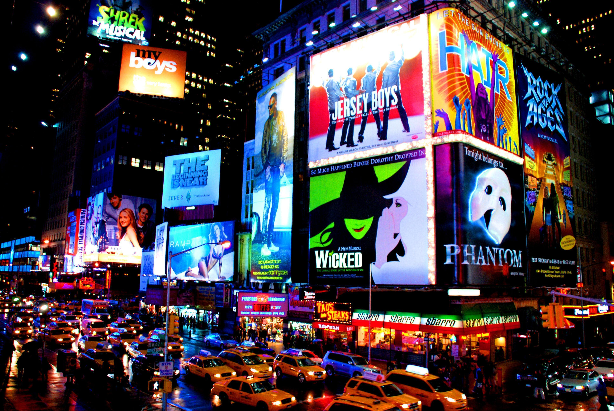
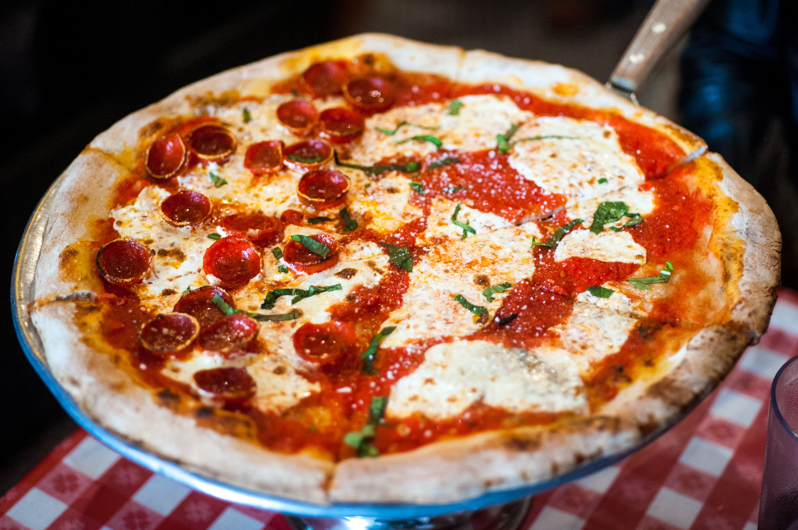
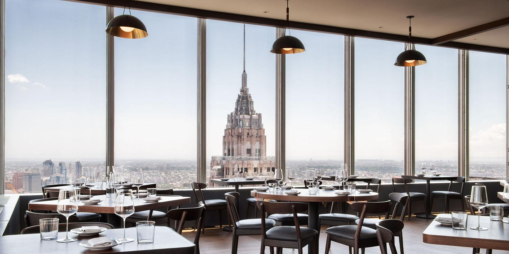
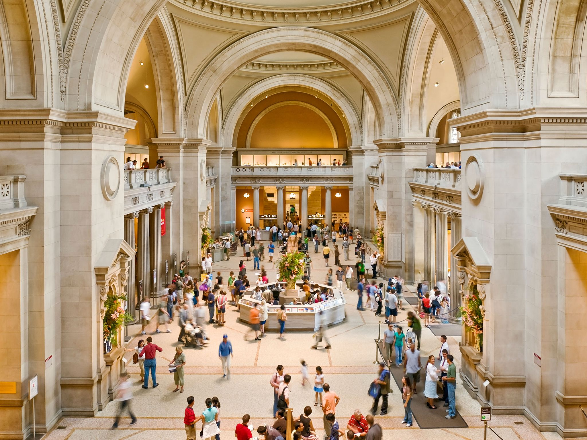

A New York-i Broadway a világ egyik leghíresebb színházi negyede, ahol évente számtalan musicalt mutatnak be. Itt klasszikus darabok, mint a The Phantom of the Opera, a Chicago vagy a The Lion King mellett folyamatosan jelennek meg új, kreatív előadások. A Broadway-musicalek jellemzően látványos díszletekkel, színvonalas koreográfiákkal és emlékezetes zenékkel kápráztatják el a közönséget, így turisták és helyiek egyaránt előszeretettel látogatják őket. A jegyek gyakran előre foglalhatók, és a showk este kezdődnek, ami része a klasszikus New York-i színházi élménynek.

A New York-i pizza világhírű, jellegzetesen vékony tésztájú és nagy szeletekkel tálalják. Gyakran street foodként fogyasztják, és a szeleteket könnyen lehet kézben tartani, miközben sétálnak a városban. A klasszikus feltétek közé tartozik a sajt, a paradicsomszósz és a pepperoni, de rengeteg kreatív variáció is létezik. Sok pizzéria, például a Joe’s Pizza vagy a Lombardi’s, több generáció óta készíti a város jellegzetes ízű pizzáit. A New York-i pizza egyszerre ízletes, gyors és autentikus városi élmény.

New York a világ egyik legmultikulturálisabb városa, és ez a gasztronómiáján is jól látszik. A városban szinte minden nemzet konyhája képviselteti magát: találkozhatsz autentikus olasz, kínai, indiai, mexikói, japán vagy éppen etióp éttermekkel. A különböző negyedek, mint Chinatown vagy Little Italy, saját hangulatukkal és ízeikkel várják a látogatókat. A multikulturális éttermek nemcsak a helyiek kedvencei, hanem turisták számára is izgalmas kulináris élményt kínálnak, ahol a világ ízei egy városban találkoznak.

New York híres múzeumairól, amelyek a világ legjelentősebb gyűjteményeit kínálják. A MoMA (Museum of Modern Art) a modern és kortárs művészet központja, ahol olyan művészek alkotásait láthatjuk, mint Van Gogh, Picasso vagy Warhol. A Metropolitan Museum of Art (MET) a klasszikus és világművészetek tárháza, több millió műtárggyal az ókortól a modern korig, és különleges időszaki kiállításokkal is várja a látogatókat. Mindkét múzeum ikonikus New York-i élmény, amely a művészet iránt érdeklődők számára kihagyhatatlan.